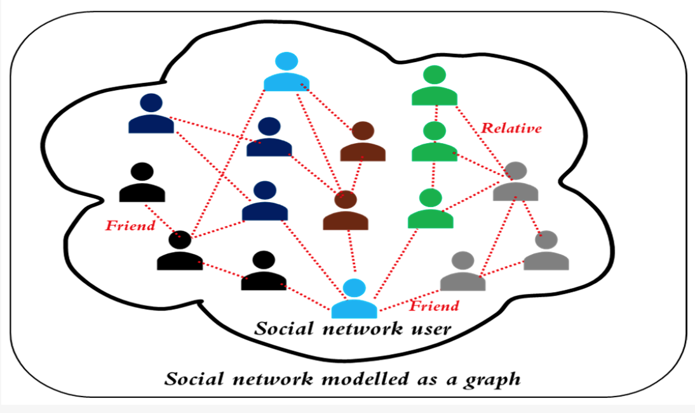
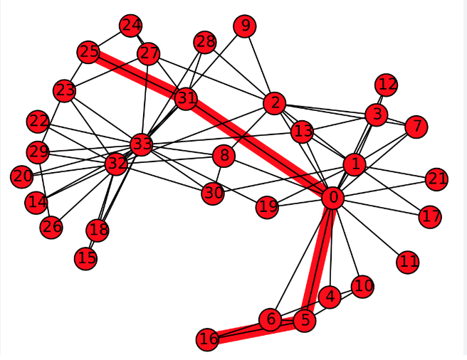
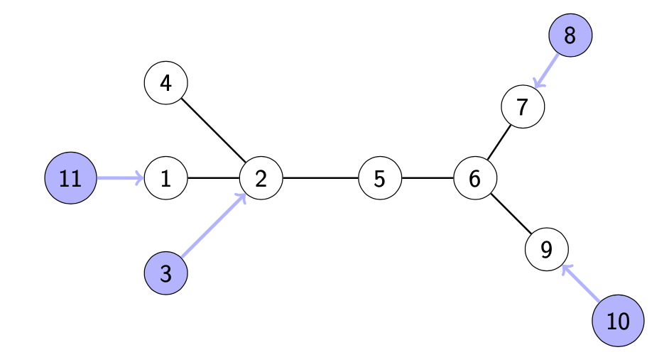
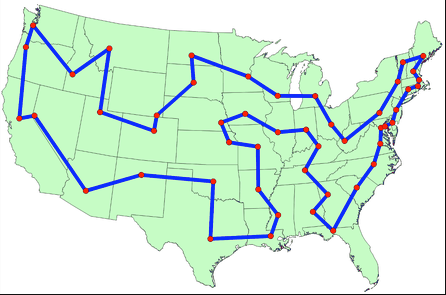

(t,r) Zero Forcing
Mark Hunnell
June 2026
About Me

About Me
About Me
What we're here to talk about
Math Stuff!
Graphs
We will study simple graphs: collections of vertices and edges.

Why does anyone care about graphs?
Social Media
- Nodes are people or items shared
- Edges are follows or interactions

Why does anyone care about graphs?
Internet Networks
- Nodes are server locations
- Edges are cables connecting them
Why does anyone care about graphs?
Chemistry
- Nodes are atoms
- Edges are bonds
Some important questions
Problems to answer
- Shortest path
- Graph coloring problems
- Postman problem
- Zero forcing


Traveling Salesman Problem
Visit all the nodes of a graph and return home as quickly as possible.

Demonstration
Standard Zero Forcing: Core Idea
Let $G=(V,E)$ be a simple graph.
- Each vertex is colored either light-blue (active) or white (inactive).
- Start with an initial active set $B_0\subseteq V$.
- Apply the color-change rule repeatedly.
Color-change rule: If an active vertex $u$ has exactly one white neighbor $v$, then $u$ forces $v$ to become active. We write $u\to v$.
Process and Terminology
- A sequence of valid forces is a forcing process.
- If every vertex eventually becomes active, then $B_0$ is a zero forcing set.
The minimum size of such a set is the zero forcing number:
$$Z(G)=\min\{\lvert B\rvert: B\subseteq V,\ B \text{ is a zero forcing set}\}.$$
Animated Example on the Path $P_5$
(static version)
All vertices are active, so $\{1\}$ is a zero forcing set for $P_5$.
Why the Path Example Works
- Start with one active endpoint.
- At each step, the current frontier vertex has exactly one white neighbor.
- This keeps creating the next valid force.
$$1\to2\to3\to4\to5$$
Cycle With a Chord: Not Every Move is Legal
Blocked vs forceable states — unique-white-neighbor requirement matters.
Tree Example: Initial Choice Matters
Strategic initial placement is the heart of zero forcing.
Takeaway and Transition
- Standard zero forcing tracks deterministic propagation via the unique-white-neighbor rule.
- Central optimization: minimize $\lvert B_0\rvert$, giving $Z(G)$.
- Next: extend to $(t,r)$ frameworks.